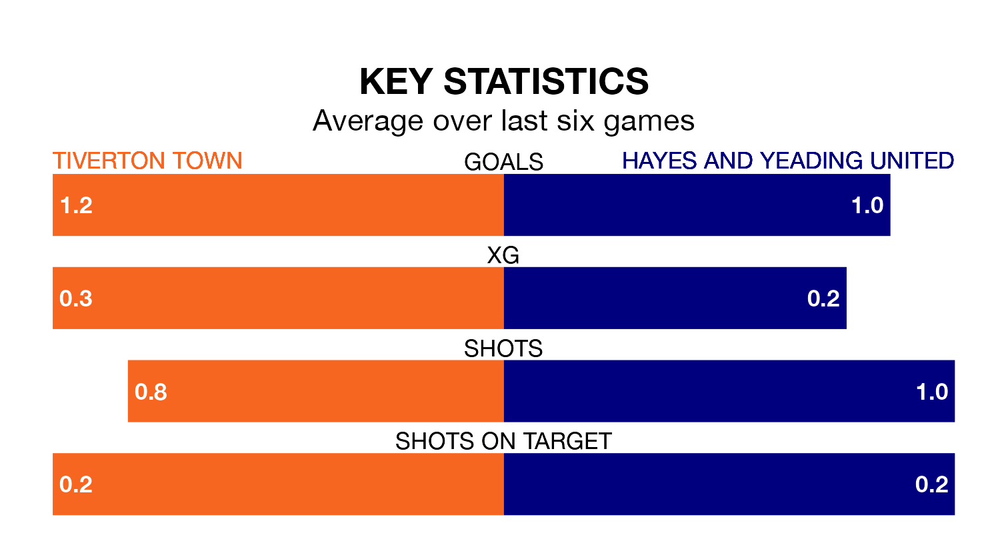

Hayes and Yeading United travel to Ladysmead looking to secure a first win in 10 Southern League Premier South games against Tiverton Town on Saturday.
Hayes & Yeading have lost five and drawn four matches since they last earned three points – against Basingstoke Town on October 24.
They face a Tiverton side who have won three and drawn three over that time.
Hayes & Yeading are 19th in the table after 22 games, of which they have won five and drawn seven, earning 22 points.
Tiverton are two places ahead of United in 17th, with five wins and eight draws putting them on 23 points.
With 35 goals in 23 games so far this season, Town are scoring at below the league average rate with 1.5 goals per game. And they are conceding more than average, letting in 45 goals at a rate of 2.0 per game.
The away team are also below average scorers, with 1.6 goals per game, compared to a league average of 1.7. They have conceded 1.7 goals per game.
Over the last year, Tiverton and Hayes & Yeading have played each other on three occasions. Hayes & Yeading won two of them and they drew once.
Their last meeting was on August 12, when Hayes & Yeading won 5-2 at home.
Tiverton's last match was on January 6, a 4-2 loss against Salisbury.
Hayes & Yeading drew 0-0 with Walton and Hersham last time out, also on January 6.
Updated: 15:34, 08/01/24